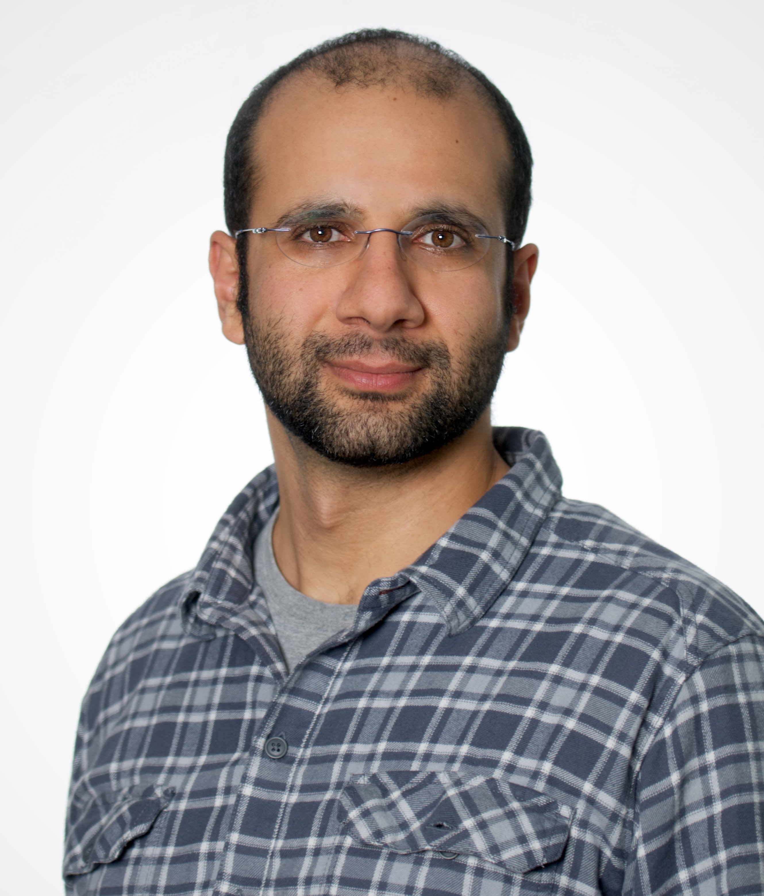

Pantelis Eleftheriou
Associate Professor and EPSRC Early Career Fellow
Department of Pure Mathematics, University of Leeds |
Address:
School of Mathematics, University of Leeds
Leeds LS2 9JT,
United Kingdom
Office: 8.27
Email:
p [dot] eleftheriou [at] leeds [dot] ac [dot] uk
Curriculum Vitae
Recent and upcoming events organized:
- MAC 30 - Model theory, Algebra & Combinatorics, Leeds (UK), October 7 - 9, 2024.
- Workshop: Combinatorial Problems in Model Theory and Computer Science, Leeds (UK), November 6 - 8, 2023.
- Oberwolfach Mini-Workshop: Topological and Differential Expansions of O-minimal Structures, Oberwolfach (Germany), November 27 - December 3, 2022.
- Practical and Structural Model Theory - on the occasion of the 60th birthdays of Kobi Peterzil and Sergei Starchenko, Leeds (UK), July 25 - 29, 2022. *** recorded ***
- Unimod 2022: 3-Week Model Theory Program, Leeds (UK), July 18 - August 5, 2022.
- Online Seminar: Topological and Differential Expansions of O-minimal Structures, 2020 - 2021. *** recorded ***
- 12th Panhellenic Logic Symposium, Anogeia, Crete (Greece), June 26 - 30, 2019.
- Workshop on Tame Expansions of O-minimal Structures, Konstanz (Germany), October 1 - 4, 2018.
- 11th Panhellenic Logic Symposium, Delphi (Greece), July 12 - 16, 2017.
-
Summer School in Tame Geometry, Konstanz (Germany), July 18 - 23, 2016.
*** recorded ***